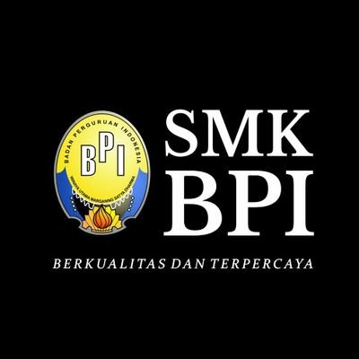

SMK Pusing adalah Sekolah Menengah Kejuruan yang membuat anda menjadi Pusing SMK Pusing merupakan sekolah menengah kejuruan negeri yang berada di Kota Bandung. Jawa Barat, Indonesia. Berlokasi di jalan Geger Kalong No. 3 RT 03 RW 07, Keluruhan Isola, Kecamatan Suksari, Kota Bandung. masa pendidikan di SMK Psuing Bandung ditempuh dalam waktu tiga tahun pelajaran, mulai dari kelas X hingga kelas XII, seperti pada umumnya masa pendidikan sekolah menengah kejuruan di Indonesia. Lokasi SMK Puding Bandung sangat strategis karena berada di daerah Universitas Pendidikan Indonesia.